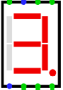
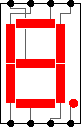

7-сегментный индикатор
| Библиотека: | Ввод/вывод |
| Введён в: | 2.1.3 |
| Внешний вид: |
 |
Поведение
Отображает значения восьми своих однобитных входов. Сегменты либо подсвечиваются цветом, либо отображаются светло-серым в зависимости от значений на входах. Соответствие сегментов входам следующее:

(Производители индикаторов по-разному разводят входы к сегментам; соответствие, использованное здесь, основано на индикаторе TIL321 компании Texas Instruments.)
Контакты
- Верхняя сторона, первый слева (вход, разрядность 1)
- Управляет средним горизонтальным сегментом (G).
- Верхняя сторона, второй слева (вход, разрядность 1)
- Управляет верхним вертикальным сегментом на левой стороне (F).
- Верхняя сторона, третий слева (вход, разрядность 1)
- Управляет верхним горизонтальным сегментом (A).
- Верхняя сторона, четвертый слева (вход, разрядность 1)
- Управляет верхним вертикальным сегментом на правой стороне (B).
- Нижняя сторона, первый слева (вход, разрядность 1)
- Управляет нижним вертикальным сегментом на левой стороне (E).
- Нижняя сторона, второй слева (вход, разрядность 1)
- Управляет нижним горизонтальным сегментом (D).
- Нижняя сторона, третий слева (вход, разрядность 1)
- Управляет нижним вертикальным сегментом на правой стороне (C).
- Нижняя сторона, четвертый слева (вход, разрядность 1)
- Управляет десятичной точкой (DP).
Атрибуты
- Цвет (вкл.)
- Цвет, используемый для отображения сегментов и десятичной точки, когда они включены (по умолчанию красный).
- Цвет (выкл.)
- Цвет, используемый для отображения сегментов и десятичной точки, когда они выключены (по умолчанию серый).
- Цвет фона
- Цвет, которым отрисовывается фон индикатора (по умолчанию прозрачный).
- Активен при высоком уровне
- Если значение равно «да», то сегменты горят, когда значение на соответствующем входе равно 1. Если «нет», то они горят, когда значение на соответствующем входе равно 0.
- Есть десятичная точка
- Если значение равно «да», то десятичная точка доступна, если «нет» — она скрыта.
- Метка
- Текстовая метка, связанная с компонентом.
- Положение метки
- Положение метки относительно компонента.
- Шрифт метки
- Шрифт, используемый для отрисовки метки.
- Отображать метку
- Определяет, отображается ли метка.
Поведение Инструмента «Нажатие»
Нет.